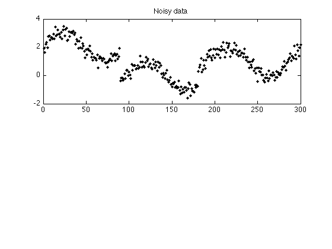
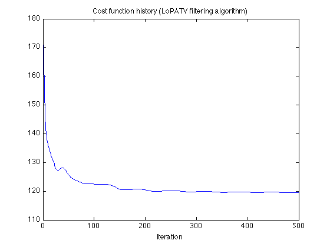
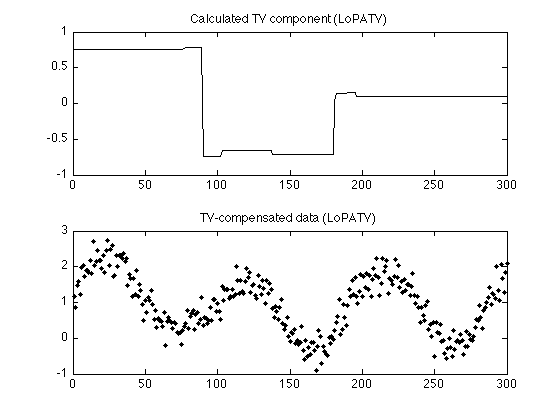
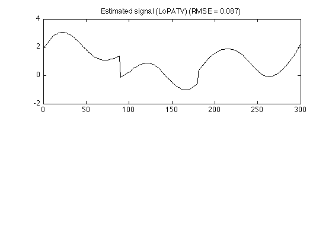
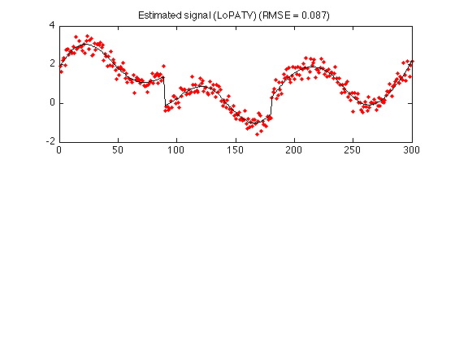
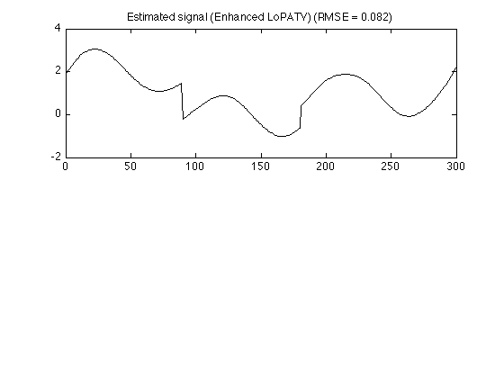
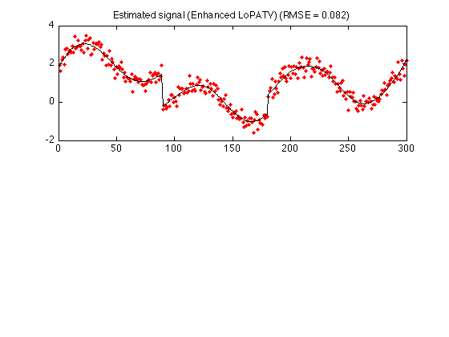
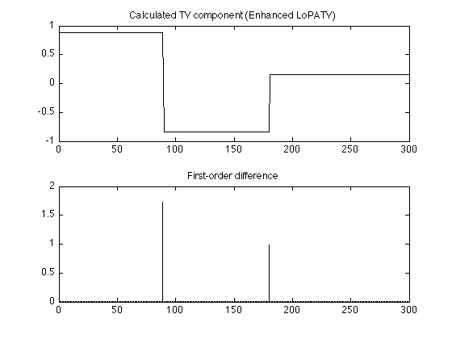

Example 2: Local polynomial approximation + total variation filtering
Simultaneous local least-square polynomial approximation and total variation filtering
Ivan Selesnick, Polytechnic Institute of NYU December 2011 Email: selesi@poly.edu Reference: Polynomial Smoothing of Time Series with Additive Step Discontinuities I. W. Selesnick, S. Arnold, and V. R. Dantham
Contents
Start
clear % close all printme = @(filename) print('-dpdf', sprintf('figures/Example2_%s', filename));
Create signals
Create simulated signal (smooth signal with additive step discontinuities)
N = 300; n = (1:N)'; s1 = 2*(n < 0.3*N) + 1*(n > 0.6*N); % step function s2 = sin(0.021*pi*n); % smooth function s = s1 + s2; % total signal randn('state',0); % Initialize randn so that example can be exactly reproduced sigma = 0.3; noise = sigma*randn(N,1); y = s + noise; % noisy signal figure(2) clf subplot(2,1,1) plot(y,'.k') title('Noisy data'); printme('data')
LoPATV filtering
Apply local polynomial approximation + TV filtering (LoPATV filter) to noisy data
deg = 2; % deg : degree of polynomial P = 40; % P : block overlap L = 50; % L : block length lambda = 8; % lambda : regularization parameter (N-L)/(L-P)+1 % This is the number of blocks - it should be an % integer, otherwise the data will be truncated Nit = 500; % Nit : number of iterations mu0 = 10; % mu0 : augmented Lagrangian parameter mu = 1; % mu : augmented Lagrangian parameter [x, p, cost] = lopatv(y, L, P, deg, lambda, Nit, mu0, mu); rmse_lopatv = sqrt(mean((s - x - p).^2)); fprintf('LoPATV: RMSE = %f\n', rmse_lopatv)
ans =
26
LoPATV: RMSE = 0.086840
Display cost function history. The cost function flattens out as the algorithm converges.
figure(1) clf plot(cost) title('Cost function history (LoPATV filtering algorithm)') xlabel('Iteration') printme('LoPATV_convergence')
Display TV component and TV-compensated data
figure(1) clf subplot(2,1,1) plot(x, 'black') title('Calculated TV component (LoPATV)'); subplot(2,1,2) plot(y - x, 'k.') title('TV-compensated data (LoPATV)'); printme('LoPATV_TV')
Result of LoPATV filtering
txt = sprintf('Estimated signal (LoPATV) (RMSE = %.3f)', rmse_lopatv); figure(2), clf subplot(2,1,1) plot(x + p, 'color','black') title(txt) printme('LoPATV')
Display with noisy data
txt = sprintf('Estimated signal (LoPATV) (RMSE = %.3f)', rmse_lopatv); figure(2), clf subplot(2,1,1) plot(n, y, '.r', n, x + p, 'black') title(txt) printme('LoPATV_color')
Enhanced LoPATV
Lp minimization
mu0 = 50; mu = .1; Nit = 200; lambda = 8; P = 40; % P - block overlap L = 50; % L - block length deg = 2; % deg - degree of polynomial pow = 0.7; E = 0.05; [x, p, cost] = lopatv_Lp(y, L, P, deg, lambda, Nit, mu0, mu, pow, E); rmse_lopatv_Lp = sqrt(mean((s - x - p).^2)); fprintf('Enhanced LoPATV: RMSE = %.2e\n', rmse_lopatv_Lp) % Display result txt = sprintf('Estimated signal (Enhanced LoPATV) (RMSE = %.3f)', rmse_lopatv_Lp); figure(1) clf subplot(2,1,1) plot(x + p, 'black') title(txt) printme('LoPATV_Lp')
Enhanced LoPATV: RMSE = 8.20e-02
Display result with noisy data
figure(1) clf subplot(2,1,1) plot(n, y,'.r', n, x + p, 'black') title(txt) printme('LoPATV_Lp_color')
Piecewise constant component (TV component)
figure(2) clf subplot(2,1,1) plot(x, 'black') title('Calculated TV component (Enhanced LoPATV)'); subplot(2,1,2) stem(abs(diff(x)),'marker','none', 'color','black') title('First-order difference'); printme('LoPATV_TV')